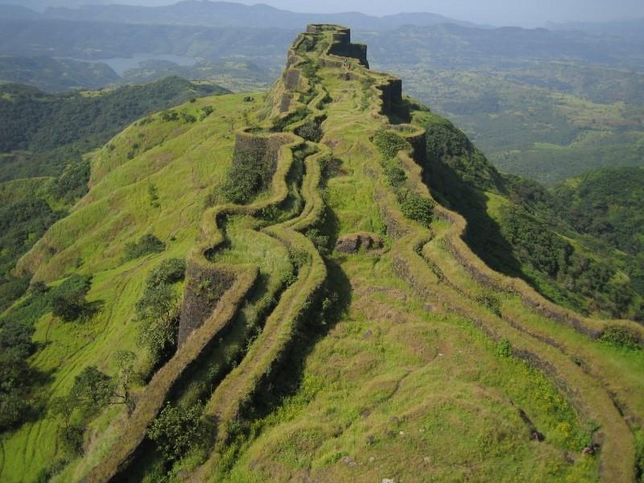
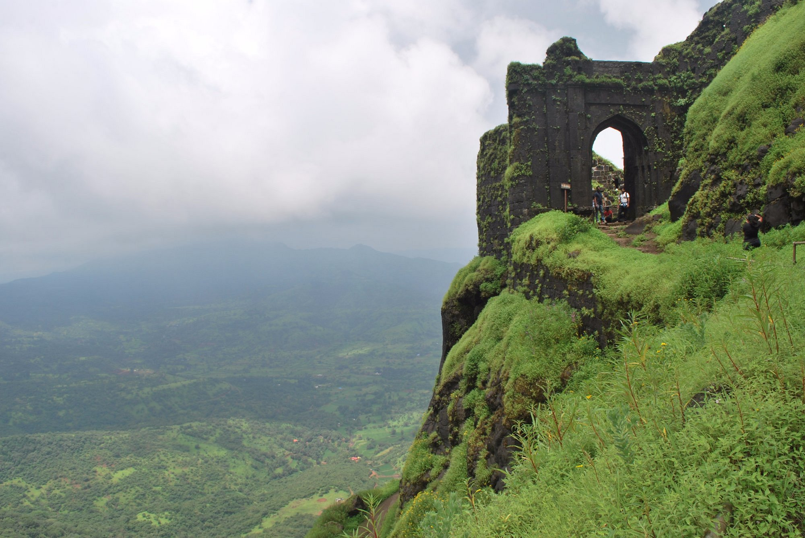

Rajgad (literal meaning Ruling Fort) is a hill fort situated in the Pune district of Maharashtra, India. Formerly known as Murumdev, the fort was the capital of the Maratha Empire under the rule of Chatrapati Shivaji Maharaj for almost 26 years, after which the capital was moved to the Raigad Fort.Treasures discovered from an adjacent fort called Torna were used to completely build and fortify the Rajgad Fort.[citation needed]he Rajgad Fort is located around 60 km (37 mi) to the south-west of Pune and about 15 km (9.3 mi) west of Nasrapur in the Sahyadris range. The fort lies 1,376 m (4,514 ft) above the sea level. The diameter of the base of the fort was about 40 km (25 mi) which made it difficult to lay siege on it, which added to its strategic value. The fort's ruins consist of palaces, water cisterns, and caves. This fort was built on a hill called Murumbadevi Dongar (Mountain of the Goddess Murumba). Rajgad boasts of the highest number of days stayed by Chatrapati Shivaji Maharaj on any fort.The fort has stood witness to many significant historic events including the birth of Chatrapati Shivaji Maharaj's son Rajaram I, the death of Chatrapati Shivaji Maharaj's Queen Saibai, the return of Chatrapati Shivaji Maharaj from Agra, the burial of Afzal Khan's head in the Mahadarwaja walls of Balle Killa, the strict words of Sonopant Dabir to Chhatrapati Shivaji Maharaj.The Rajgad Fort was also one of the 12 forts that Chatrapati Shivaji Maharaj kept when he signed the Treaty of Purandar in 1665, with the Mughal general Jai Singh I, leader of the Mughal forces. Under this treaty, 23 forts were handed over to the Mughals.

